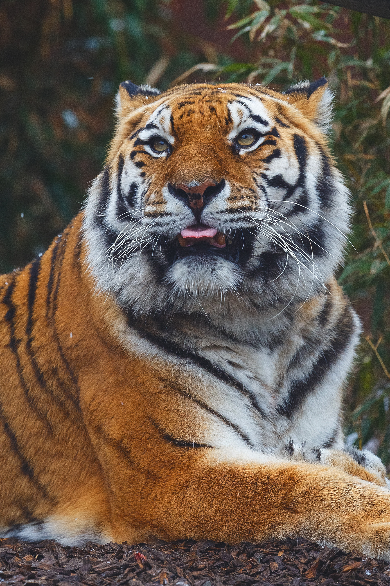
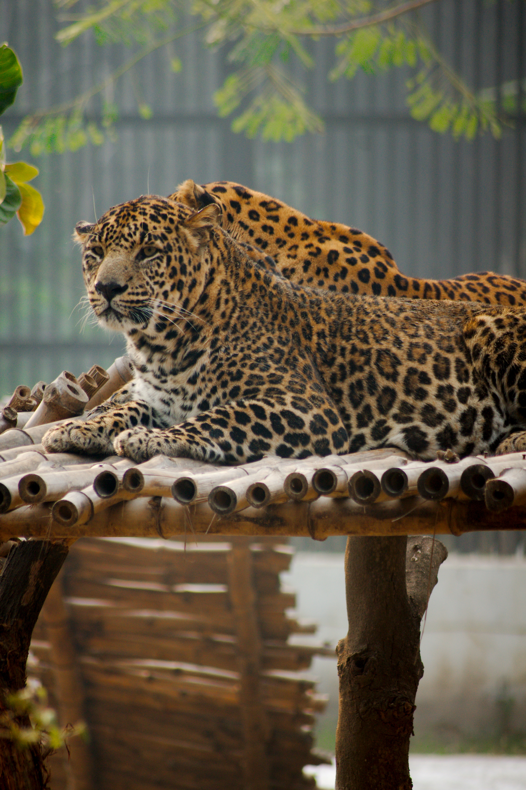
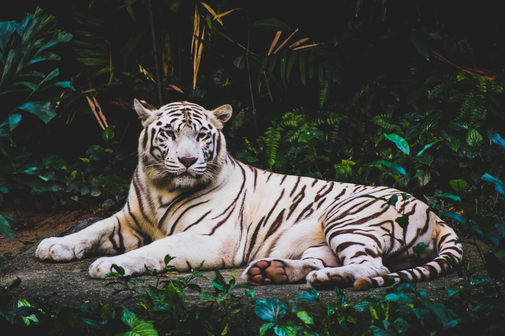
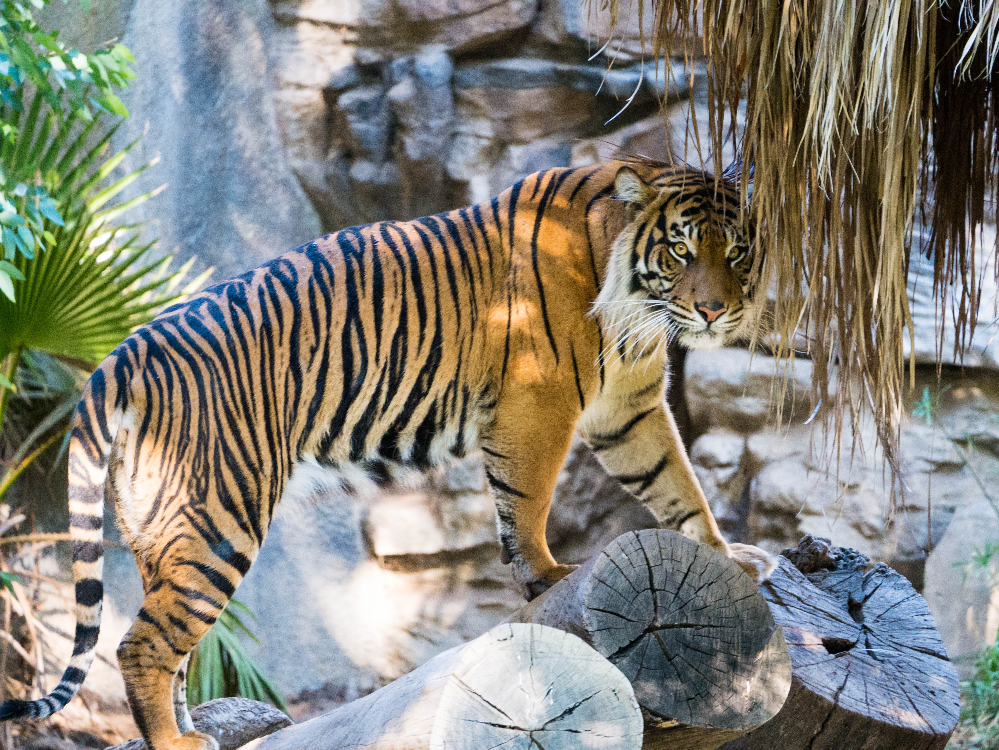
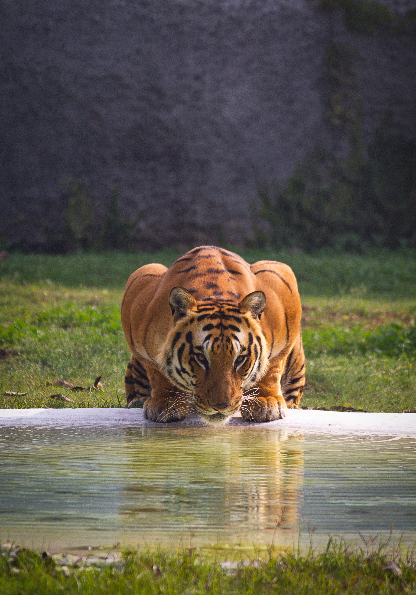
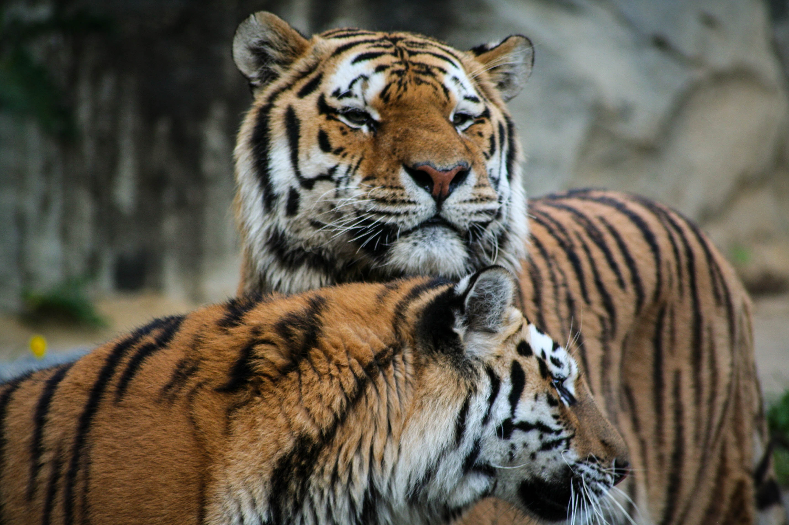
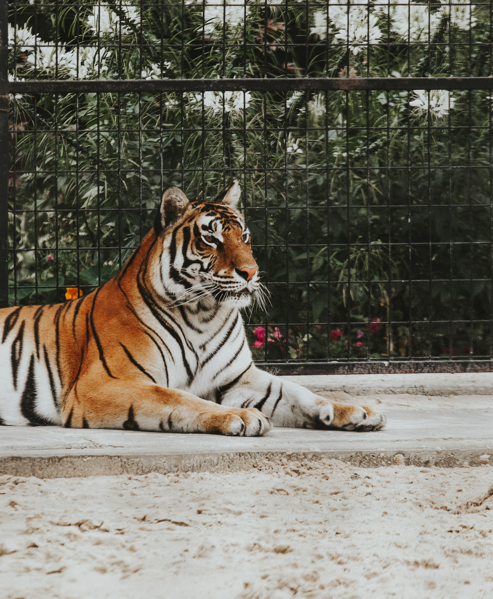
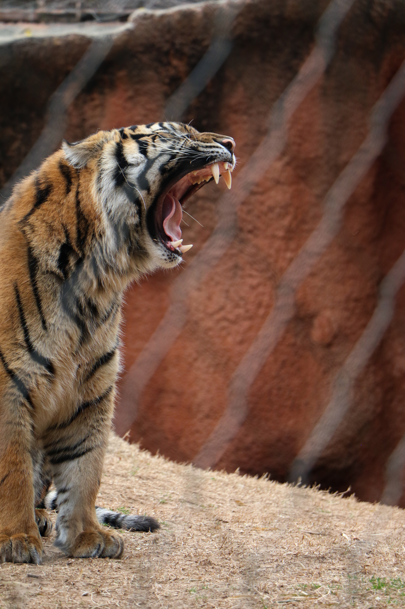
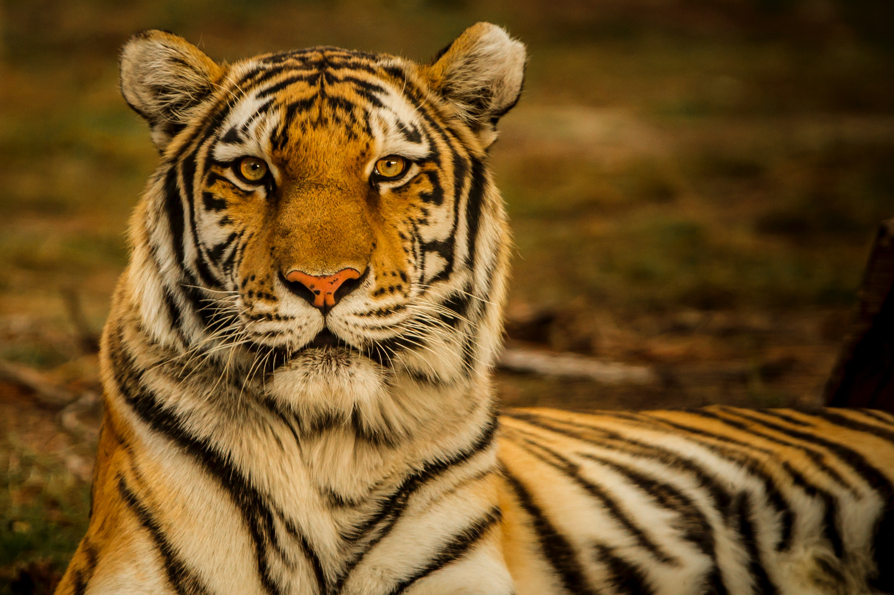

My Love for Tigers
I have been passionate about Tigers for a long time. This site was built as a tribute to these wonderful felines ...
I am part of the TLS which aims to educate the public about these splendid animals.
This is what Wikipedia says:
The Tiger (Panthera tigris) is a carnivorous mammal of the cat family (Felidae) of the genus Panthera. Easily recognisable by its reddish-orange fur with black stripes, it is the largest wild cat and one of the largest carnivores in the world. The species is divided into nine subspecies with minor differences in size and behaviour. Superpredator, it hunts mainly deer and wild boar, although it can tackle larger prey such as buffalo. Until the nineteenth century, the Tiger was reputed to be a man-eater. The social structure of tigers is actually that of a solitary animal; the male has a territory that encompasses the areas of several females and is not involved in the education of the offspring.
Wikipedia












| African Lion | Siberian Tiger | |
|---|---|---|
| Length | 6'1" | 7'4" |
| Height | 3'8" | 3'3" |
| Weight | 180kg | 305kg |
| Area | Africa | Russia |